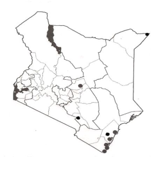
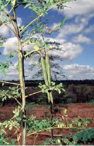
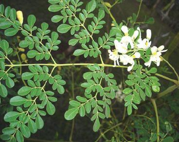
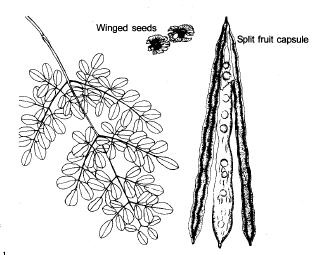

Moringa / Moringa oleifera
Moringa / Moringa oleifera
{kind=link}
Moringaceae
Chonyi (Muzungwi); Daasanach (Hocholoch); English (Drumstick tree, Moringa); Giriama (Muzungi, Muzungwi); Kambe (Muzungwi); Sanya (Muzungwa); Swahili (Mrongo, Mzunze); Tharaka (Muguunda).
Introduction
General Distribution:
|  |
| Distribution of Moringa oleifera in Kenya |
| (c) Maundu P. and Bo Tengnas. (2005). Useful trees and shrubs for Kenya, World Agroforestry Centre. |
General Information about the Tree:
Biophysical Limits:
Mean annual temperature: 12.6 to 40 deg. C,
Mean annual rainfall: At least 500 mm
Soil type: A adapted to a wide range of soil types but does well in well drained clay or clay loam without prolonged waterlogging. Prefers a neutral to slightly acidic soil reaction, but it has recently been introduced with success in Pacific atolls where the pH is as high as 8.5.
Propagation and Tree Management
|  |
| (c) Patrick Maundu, World Agroforestry Centre |
|  |
| Moringa Leaves |
| (c) Patrick Maundu, World Agroforestry Centre |
|  |
| (c) A. Bekele-Tesemma, World Agroforestry Centre |
Products:
- Food: The leaves, a good source of protein, vitamins A, B and C and minerals such as calcium and iron, are used as a spinach equivalent. They are an excellent source of the sulphur-containing amino acids methionine and cystine, which are often in short supply. Young plants are eaten as a tender vegetable and the taproots as an alternative for horseradish. Young pods are edible and reportedly have a taste reminiscent of asparagus. The green peas and surrounding white material can be removed from larger pods and cooked in various ways. Seeds from mature pods (which can be 40-50 cm long) can be browned in a skillet, mashed and placed in boiling water, which causes an excellent cooking or lubricating oil to float to the surface. The pleasantly flavoured edible oil, resembling olive oil, is an excellent salad oil. The flowers can be eaten or used to make a tea.
- Fodder: Leaves are mainly used for human food and not to any great extent for livestock, but branches are occasionally lopped for feeding camels and cattle.
- Apiculture: Its silviculture, involving regeneration by cuttings, coppicing and pollarding, keeps flowering on and off most parts of the year. This provides nectar to honey bees for a long period.
- Fuel: The soft and light wood is an acceptable firewood for cooking but makes poor charcoal. It has a density of 0.5 - 0.7 and yields approximately 4600 kcal/kg.
- Fibre: Bark, when beaten, produces a fibre used to make small ropes and mats. A study on the production of rayongrade pulp from M. oleifera by a prehydrolyzed sulphate process in India shows that it is suitable as a raw material for the production of high alpha cellulose pulp for use in cellophane and textiles.
- Timber: The wood is very soft and light and is useful only for light construction work. Gum or resin: When the tree is injured, the stem exudes a gum that is used in calico printing, as a condiment, and for stomach and bladder ailments. The mucilaginous gum has a bland taste and belongs to the hog series of gums.
- Tannin or dyestuff: Bark used for tanning hides and wood yields a blue dye.
- Lipids: Oil extracted from the mature pods (oil of Ben) is yellowish, non-drying, good keeping qualities but eventually turns rancid. It is used as a lubricant, in cosmetics and perfumes, and to some extent is a substitute for sperm-whale oil.
- Medicine: Moringa seeds are effective against skin-infecting bacteria Staphylococcus aureus and Pseudomonas aeruginosa. They contain the potent antibiotic and fungicide terygospermin. The alkaloid spirachin (a nerve paralysant) has been found in the roots. Even when free of bark, the condiment in excess may be harmful. A decoction of the flowers is used as a cold remedy. The gum is diuretic, astringent and abortifacient and is used against asthma. Oil of Ben is used for hysteria, scurvy, prostate problems and bladder troubles. The roots and bark are used for cardiac and circulatory problems, as a tonic and for inflammation. The bark is an appetizer and digestive. The iron content of the leaves is high, and they are reportedly prescribed for anaemia in the Philippines.
- Other products: In the Sudan, powdered seeds are deemed more effective than slices of okra (Abelmoschus esculentus) for treatment of bee honey; they can be used without boiling and can also be used to clarify sugarcane juice. The crushed leaves are used to clean pots and pans, and the Hausa and Yoruba of Nigeria even use them to clean walls.
Services:
- Erosion control: M. oleifera is suited to areas where strong winds and long, dry spells occur simultaneously, causing serious soil erosion.
- Soil improver: The green leaves make a useful mulch. The press cake left after oil extraction from the seeds can be used as a soil conditioner or as fertilizer.
- Ornamental: The species is widely planted as an ornamental.
- Boundary/barrier/support: Planted as a hedge in courtyards, M. oleifera provides wind protection, shade and support for climbing garden plants. Widely used for live fences and hedges in Kenya, Nigeria, Tanzania, India, and elsewhere. Stakes root easily and are stable, and cuttings planted in lines are used particularly around houses and gardens.
- Intercropping: The tree provides semi-shade, useful in intercropping systems where intense direct sunlight can damage crops.
- Pollution control: Suspension of the ground seed of M. oleifera, the benzolive tree, is used as a primary coagulant. It can clarify water of any degree of visible turbidity. At high turbidity, its action is almost as fast as that of alum, but at medium and low turbidity, good clarification is obtained if a small cloth bag filled with the powdered seeds is swirled round in the turbid water. To prepare the seed for use as a coagulant, remove the seed coat and wings. The white kernel is then crushed to a powder, using a mortar or placing it in a cloth and crushing it with a stone. The powder should be mixed with a small amount of water, stirred, then poured through a tea strainer before being added to the turbid water.
Seed:
Pick mature (brown) capsules from the tree, dry in the sun, put in a bag and thresh with a stick. Separate seed and chaff by hand or by winnowing. Dry further in the sun for 3-5 days. Germination rate 60-70%. 4,000-5,000 seed per kg. Germination time ranges from a few days to more than 2 months, but usually quite fast.
Treatment:
Not necessary.
Storage:
Seed can be stored for long periods.
Remarks:
Pests and Diseases
This tree is susceptible to attacks by the root rot (Diplodia spp.) and papaya powdery mildew (Levellula taurica). Eupterote mollifera (hairy caterpillar) causes defoliation but it can be controlled by spraying the tree with fish oil, resin soap or BHC.
Information Source Links
- Beentje HJ. (1994). Kenya trees, shrubs and lianas. National Museums of Kenya.
- Bekele-Tesemma A, Birnie A, Tengnas B. (1993). Useful trees and shrubs for Ethiopia. Regional Soil Conservation Unit (RSCU), Swedish International Development Authority (SIDA).
- Birnie A. (1997). What tree is that? A beginner's guide to 40 trees in Kenya. Jacaranda designs Ltd.
- Maundu, P. and Tengnas, B. (2005). Useful trees and shrubs for Kenya. World Agroforestry Centre. ISBN: 9966-896-70-8
www.worldagroforestry.org
Last updated.
| Unless otherwise stated, all content on the Infonet Biovision Website is licensed under a Creative Commons License | Disclaimer |